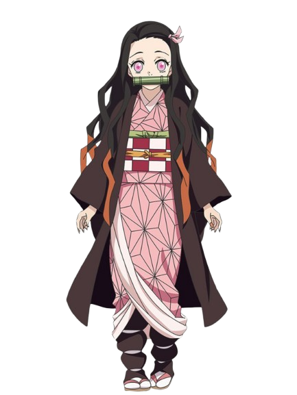
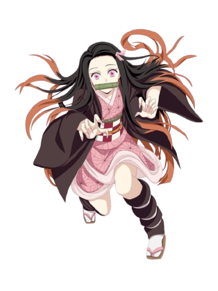
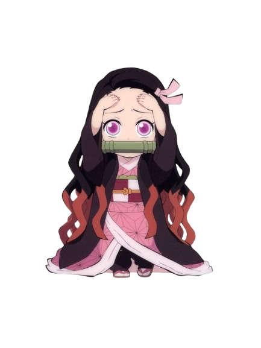
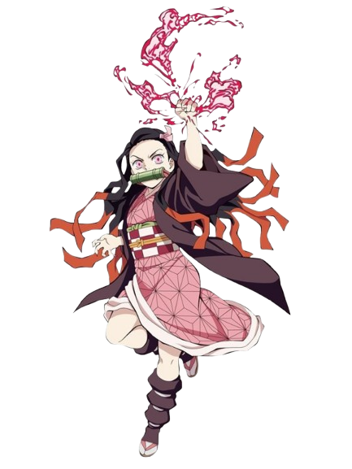

.jpg)

.jpg)

.jpg)

Nezuko Kamado adalah adik perempuan Tanjiro dari Demon Slayer: Kimetsu no Yaiba, yang dikenal karena perubahan tragisnya menjadi iblis setelah keluarganya dibantai. Meski begitu, Nezuko tetap mempertahankan sisi manusiawinya dan menunjukkan tekad kuat untuk melindungi orang lain, membuatnya jadi salah satu karakter paling manis dan ikonik di seri tersebut.

Regenerasi Cepat
★★★★★
Nezuko bisa menyembuhkan luka parah dalam hitungan detik.

Kekuatan Fisik Besar
★★★★★
Memiliki tenaga luar biasa, bahkan bisa menendang kepala iblis hingga hancur.

Perubahan Ukuran Tubuh
★★★★
Bisa mengecil seperti anak kecil atau membesar saat bertarung.

Blood Demon Art
★★★★★
Exploding Blood: darahnya bisa menyala menjadi api yang membakar iblis dan racun tanpa melukai manusia.

Nezuko Kamado memakai bambu di mulutnya sebagai alat untuk menahan diri agar tidak menggigit manusia setelah ia berubah menjadi iblis. Bambu itu dipasang oleh Urokodaki Sakonji agar Nezuko tidak melukai siapa pun dan sekaligus menjadi simbol pengendalian diri serta kemanusiaannya yang masih tersisa. Selain fungsional, bambu juga melambangkan kemurnian dan keteguhan Nezuko dalam melawan naluri iblisnya demi melindungi manusia, terutama kakaknya, Tanjiro.